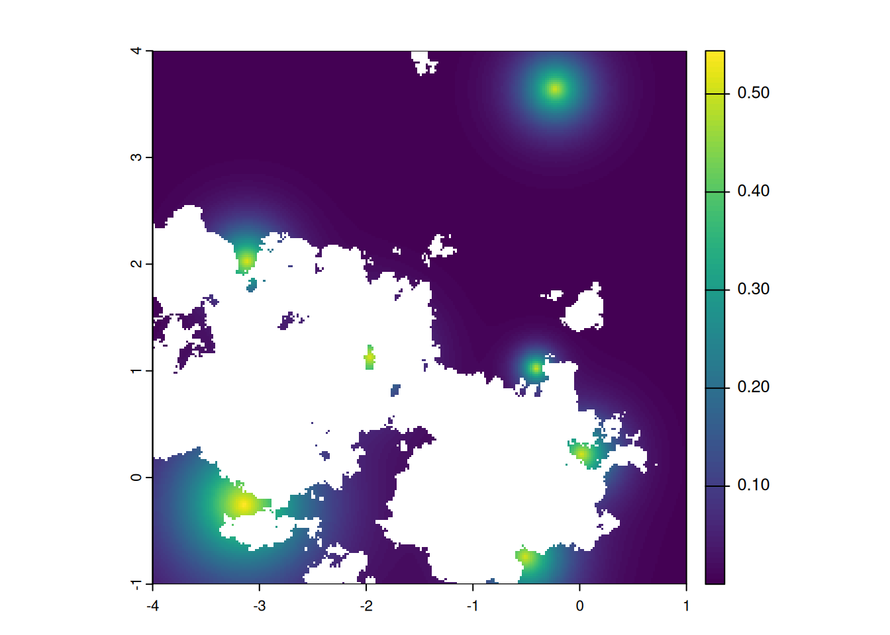
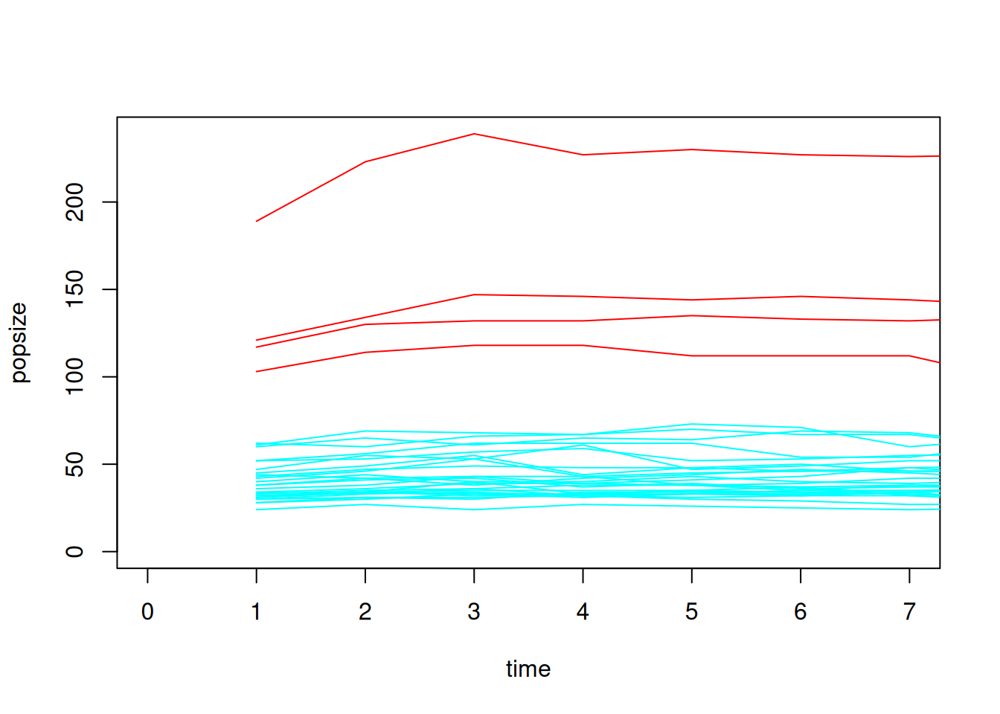
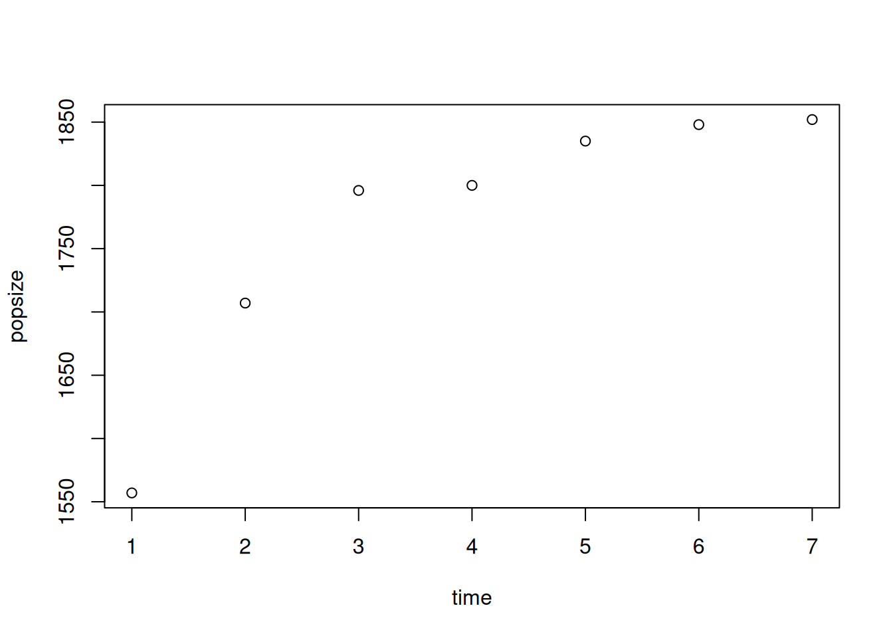
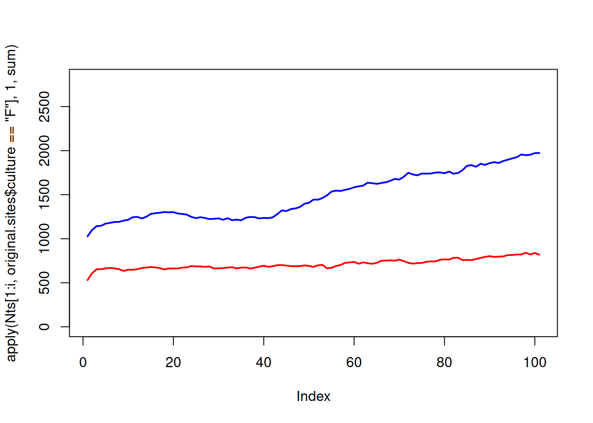
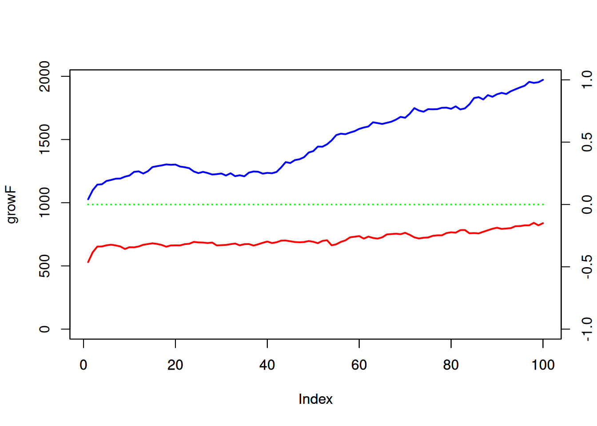

9 Archaeoriddle: the original challenge
In this chapter we will go through all the steps we presented throughout Chapter 2 to 8, but in a condensed way and with the parameters used to generate the data shared during the Archaeoriddle original challenge. But before that we will retrace the journey from the first discussions in the courtyard of the McDonald Institute in Cambridge to the final workshop in Belfast.
We will then end the chapter by briefly discussing the proposals submitted for the challenge.
9.1 Context
9.1.1 Original idea and first reflections
The original idea of this project actually stemmed from casual conversations between Xavi Rubio-Campillo and Enrico Crema. They discussed the possibilities of a gamified tournament to assess archaeological methods, but without actually ever committing seriously to put this into practice.
Some years later, with the arrival of Simon Carrignon and Alfredo Cortell-Nicolau to Cambridge, this idea came back as it was this time actually directly aligned to their lignes of research. Alfredo Cortell-Nicolau’s MSCA (H2020-MASCA-IF-2020. No. 101020631), focused on the use of tactical simulation to understand problems and biases hindering the analysis of the archaeological record while Simon Carrignon was developping models of migration and cultural interaction between population for the ENCOUNTER projet (ERC grant agreement No. 801953, cf this paper). Conversations about the project with the broader CDAL group started to make it looksfeasible, and the idea gaining strength. Enrico proposed to make this fun and engaging… and Alfredo and Simon took his word. Aided by the full CDAL and some non-CDAL charitable souls (see acknowledgements in the paper), they started to put to practice all the different ideas both for the media content, as well as for the research design.
9.1.2 Birth of a Challenge
After discussions within the members of the CDAL, it was decided that a challenge-like event, with a cash-prize, would be the best way to convince people to participate. Several options were considered, such as non-computational approaches or a hackaton format. To engage the audience, the group decided to produce a lore and series of videos, which would boost the project’s dissemination. As for the background story, the videos had three main characters: the Rabbitskinners would be represented by Rab (Simon Carrignon) and Rab (Leah Brainerd) and the Poppychewers by Pop (Charles Simmons) (every Rabbitskinner was called Rab and every Poppychewer was called Pop). On top of that, Dr. Hardy Stones (Joseph Lewis) was an archaeologist who supposedly had a time machine and knew that the relationship between the Rabbiskinners and the Poppychewers had been peaceful (although the time machine was now broken, so he could not prove it), whilst Dr. Fancy Pants (Alfredo Cortell-Nicolau) had the complete opposite idea of the project. They would attack each other on specific videos and had heated and loud discussions at the different conferences where the project was presented. The videos, produced by Alfredo Cortell-Nicolau and Elena Grau (a non-CDAL charitable soul), were purposely cheesie, and essentially consisted of the evolution of the relationship between the Rabbitskinners and the Poppychewers, but included also additional aspects, such as Rabbitskinners cooking recipes (Simon Carrignon), the taming of a dire wolf (Lluna/Xuspi, Alfredo’s 5kg dog) by Pop (Leah Brainerd), interviews with Dr. Pants and Dr. Stones, “TV connections” (with Jasmine Vieri, Chris Stevens, Joseph Lewis and Enrico Crema) and the final battle between the Rabbitskinners (Simon Carrignon, Leah Brainerd, Joseph Lewis, Miranda Evans, Vaneshree Vidyarthi, Alfredo Cortell-Nicolau and the dire-worf, Lluna/Xuspi) and the Poppychewers (Charles Simmons, Carmen Ting, Jasmine Vieri, Camilla Zeviani and Enrico Crema). All the media content can be found here, here and here.
Aside this entertaining aspect, the project was from this very beginning, in 2022, conceived as a long-term endeavour. It was clear that it will require engaging social media content as explained above, but most importantly a careful research design. This would include presenting and debating the science behind the project with the whole scientific community, through grant proposal and presentations in different specialised conferences, listed below.
9.1.3 CAA Oxford – August 2022
The official presentation of the project was performed at the CAA in Oxford (August 2022), with Simon doing a Rocky Balboa grand entrance at the sound of Eye of the Tiger and Dr. Stones and Dr. Pants, who were among the attendees, unexpectedly standing up and arguing loadly, accusing each other of post-processualists (mind you, this was the CAA!).
Scientifically, the project was laid out:
Paper ID: 131 Paper Title: Archaeoriddle: A collaborative game to improve archaeological inference Abstract: In the past years, awareness of how different forms of data can impact Archaeology is growing. Because of its very nature, archaeological data span large geographical and temporal scales; but it is fragmentary, cannot be randomly sampled, and presents uncertainty, gaps and biases. This makes the representativeness of the available sample an open question and has consequences in how inferences are made. Recent advances in computational and quantitative archaeology have promoted the development of new ways to tackle specific issues and challenges associated with the archaeological record, often with increasing levels of sophistication.
Assessing the robustness of these methods is not trivial, as we cannot directly and formally estimate their ability in reconstructing past processes. A growing number of studies has employed so-called ‘tactical simulations’ to determine whether proposed methods are able to recover key parameters of interest from simulated datasets. However, these solutions are limited by the fact that assessments are usually carried out by the very same researchers conducting the studies, and the simulated processes are designed for narrow sets of applications that embed the biases of those researchers, from the way they model the phenomena to how they approach the question and how they select the specific methods they use to answer it.
Here we make a call for a collaborative approach to further explore these issues. We will generate and supply an artificial archaeological dataset, with the underlying generative process not revealed until after the experiment. Following Axelrod (1980) and Rendell et al. (2010), we propose a tournament, or a collaborative endeavour, where participants will have access to this dataset and will be asked to analyse a specific question relating to prehistoric demography using their own inferential technique. Data, specific rules, reward, archaeological (‘virtual’) background information, research questions and other practicalities will be presented at the conference session. Because everything will be developed in silico, there is no archaeological information to which the participants will be able to refer to, except the one that will be provided by the project, where the main concerns will be based on demography and social complexity. This is done in this way to focus strictly on the methodology and eliminate possible research bias and previous opinions on real archaeological outputs.
During the CAA presentation, we will describe the project, its data, rules, etc. but the participants will not have to register for the competition yet. Following this presentation, a website will be open for any researcher to explore and join the project where the specific rules, Terms and Conditions for participation will be made available. A time period will be provided to develop the different proposals, after which a new meeting will be held where all these will be analysed and discussed. In any case, proposals can be anonymous if the participant so desires. For the participants who wish to share their methodological approach, informed consent procedures will be issued in due time.
Participants will be able to share their analysis in any format, but it is particularly recommended that they use standalone scripts relying on open-source tools, easily portable and reproducible on any platform. Comparison between quantitative analyses should be made as straightforward as possible and, in order to do that, the use of tools and concepts from open science and reproducible research is strongly encouraged.
The idea of this project is to offer a space for debate, where different theoretical and methodological options can be discussed and shared. By testing different methodological approaches under a controlled environment, the archaeological community will be able to test (1) its dependency on good data quality (2) the strengths and weaknesses of common and not-so-common archaeological methods and (3) ways to consistently share and compare the results given by these different methods. In addition, providing the same data and same research question to all the participants ensures that they will not be conditioned by the research biases affecting the real archaeological record or that the affecting biases will be the same for everyone. Ultimately, this can be seen as a further step for promoting the collaboration among archaeologists concerned with the robustness and accuracy of potential inference.
References: Axelrod, R. (1980) “Effective choice in the Prisoner’s Dilemma”, Journal of Conflict Resolution, 24(1), pp. 3-25. DOI: https://doi.org/10.1177/002200278002400101 Rendell, L., Boyd, R., Cownden, D. Enquist, M., Eriksson, K., Feldman, M. W., Fogarty, L., Ghirlanda, S., Lillicrap, T., Laland, K. N. (2010). “Why copy others? Insights from the Social Learning Strategies tournament”, Science, 328(5975), pp. 208-213. DOI: http://doi.org/10.1126/science.1184719 Authors:
- Alfredo Cortell-Nicolau (ac2320@cam.ac.uk) - Simon Carrignon (sc2297@cam.ac.uk) - Leah Brainerd (lmb211@cam.ac.uk) - Charles Simmons (cbs41@cam.ac.uk) - Joseph Lewis (jl2094@cam.ac.uk) - Enrico Crema (erc62@cam.ac.uk)
After this presentation, the shinyapp was already on (and people could check the details of the project) and the basic ideas of what we wanted to do were communicated to the audience; that is, we would produce a computational simulation of an interaction process and interested participants would have to answer specific questions with their preferred methods, to find out about this interaction. However, we were aware that engaging people (considering how busy academics always are) was going to take more than just some cheesy videos…
9.1.4 The British Academy Grant – March 2023
Obviously, a good incentive would be to have a cash prize (as some previous similar challenges had done in different scientific disciplines). However, since this was not in the original MSCA proposal, it was tricky to use those funds for this. Thus, we started to look for an additional funding source, which came out in the form of a British Academy Grant (SRG2223\230262), obtained by Simon Carrignon, Alfredo Cortell-Nicolau and Enrico Crema. With this new input, we were able to (1) fund a workshop, which would be undertaken at the next EAA conference in Belfast (August-September 2023) and, mainly, (2) provide the aforementioned cash prize. This prize consisted of a research fund of £650 for a maximum of ten potential participants who wanted to assist to the workshop. Obtaining this fund was conditioned on the participants sending a proposal with the answers to the questions posed (including the code developed) as well as presenting such proposals at the aforementioned workshop. This did boost the initiative, and it was certainly helpful to increase the number of proposals which, nevertheless, remained low. Another considered option was to give a single prize (e.g. £6500) to the best proposal, more on the line of what other similar tournaments had done. However, we did not undertake this path because although the results (and how accurate thus the proposals had been) were numerically comparable, the proposals themselves might not be. Furthermore, we wanted to keep this more like a fun and safe space, rather than actually having a competition among participants.
9.1.5 CAA Amsterdam – April 2023
This (the grant) was announced at the CAA Conference in Amsterdam in April of 2023. In this case, Leah Brainerd (Mo-Mo-Money) appeared at the conference room making money rain on the audience (fake banknotes with her face printed on them), followed by her bodyguard, Charles Simmons, and announced the prize to the attendants. Dr. Pants and Dr. Stones argued again, of course, while Simon Carrignon explained again the guidelines of the project, as below:
Paper ID: 295 Paper Title: Archaeoriddle: A collaborative game to improve archaeological inference Abstract: Archaeoriddle is a collaborative research project aimed to improve archaeological hypothesis building by comparing different methodological proposals within a crowd-sourced and interactive working framework. To achieve this, we created a virtual world through computational simulation, emulating an interaction process between a hypothetical group of incumbent hunter-gatherers and a group of spreading farmers. This virtual world and its associated virtual archaeological datasets have been developed by members of the Computational and Digital Archaeology Laboratory (CDAL) of the University of Cambridge and can be consulted here (https://acortell3.shinyapps.io/Archaeo_riddle/).
Archaeologists are well aware of the problems and limitations posed by its data. Methodological and theoretical advances have been made to tackle these challenges over the years. These include a wide range of multidisciplinary approaches, where key insights from chemistry or geology, but also mathematics and data science, are employed in order to improve and transcend the current limitations posed by the archaeological record. In particular, techniques based on statistical modelling and computational simulation, have known an exponential growth during these last years. Nevertheless, the robustness of these techniques are rarely evaluated formally, and their effective ability to reconstruct the human past is unknown. The limited samples available, and the destructive process of archaeological excavation further limits our ability to properly evaluate confounding factors such as research design and post-depositional processes, all of this contributing to archaeological uncertainty.
In short, archaeologists are constrained by the data they have, and are very rarely able to reproduce large scale studies with significant sample sizes, able to offer a data poll where the development of current formal inferential methods can be reliably applied and contrasted. But this awareness is not enough. If we want to take archaeological formal inference one step further, we must make sure that the methods that are currently being used and developed are effective within our specific research field. This is the key objective of archaeoriddle: to offer a virtual platform and a shared dataset where different methodologies can be compared against each other, with the unique opportunity to be able to assess their ability to reconstruct the human past. This collaborative enterprise will provide an unique chance to (1) help understand and compare different methods applied to archaeology, and (2) propose a general and necessary reflection on archaeological methodology, as a foundation for promoting solid and shared methodological standards.
Since the virtual interaction process has been created virtually, we know the exact parameters behind the farming expansion. However, interested participants are given only a very limited and indirect set of data and information about what happened. Using their preferred methods, we propose a game, following ideas by Axelrod (1980) and Rendell et al. (2010), where participants have to answer a series of questions related to this virtual expansion process. In this way, archaeoriddle is thought of as a game, but which also seeks for international collaboration to understand how different current theoretical and methodological proposals behave under a controlled and testable environment. The project was initially presented in the past CAA (in Oxford) and, therefore, this paper aims at briefly updating the project during a 5 min talk. In this edition of the CAA, we intend to focus on how tactical simulation and collaborative research can help improving methodological approaches to archaeological uncertainty.
References: Axelrod, R. (1980) “Effective choice in the Prisoner’s Dilemma”, Journal of Conflict Resolution, 24(1), pp. 3-25. DOI: https://doi.org/10.1177/002200278002400101 Rendell, L., Boyd, R., Cownden, D. Enquist, M., Eriksson, K., Feldman, M. W., Fogarty, L., Ghirlanda, S., Lillicrap, T., Laland, K. N. (2010). “Why copy others? Insights from the Social Learning Strategies tournament”, Science, 328(5975), pp. 208-213. DOI: http://doi.org/10.1126/science.1184719 Authors:
- Alfredo Cortell-Nicolau (ac2320@cam.ac.uk) - Simon Carrignon (sc2297@cam.ac.uk) - Leah Brainerd (lmb211@cam.ac.uk) - Charles Simmons (cbs41@cam.ac.uk) - Joseph Lewis (jl2094@cam.ac.uk) - Enrico Crema (erc62@cam.ac.uk)
This finally got the project going and, from this moment on, we started to receive the first proposals and the preparation for what would be the final workshop, where the results of the interaction process and how the model had been developed, would be revealed.
9.1.6 The EAA workshop Belfast – August/September 2023
After complementing the above with several mails, invitations and mailing lists complemented by Alfredo Cortell-Nicolau, Simon Carrignon, Xavi Rubio and Enrico Crema, everything was ready for final workshop and the ending of the project. Despite the substantial effort put in advertisement and promotion, as seen above, we only received five proposals. Further insights into what might have been the case for this can be found in the dedicated paper. In any case, the invitation to the workshop was extended to any potential interested researcher, and we counted on the presence of several of them, some of whom decided to join us in the writing of the final paper which, ultimately, consisted of the developers of the model and participants in the dissemination, mentioned above, the participants in the game, or the ones who presented proposals (any participants either in the development of the model or the dissemination were forbidden to participate in the game, since they already knew the answers) and the researchers who, after attending to the workshop, wanted to collaborate in the final paper. This gave a total of 21 authors, whose contributions were vital for the first of the (at least) two papers which will be associated to this project.
Essentially, the workshop consisted of (1) a presentation of the project, the model and its real results (by Alfredo Cortell-Nicolau and Simon Carrignon), (2) the presentation of each of the proposals by their authors and (3) an open discussion on how to move this forward, in which very valuable suggestions, such as using this work as an educational resource or as a ground of analysis for complex spatial modelling came about. Finally, this resulted in the proposal of the first paper to which, as mentioned before, some participants in the workshop decided to join.
9.2 The research
As already sketched, the project was based on a group of developers doing a computational simulation of an interaction process between hunter-gatherers and farmers, and voluntary participants (with partial data on this process) trying to assess some specific research questions. Every participant was allowed to download a public dataset, consisting of five grids of the Rabbithole map. On top of that, each participant could select up to five more grids of their own choosing. With this, they would have to answer specific research questions.
9.2.1 Research Questions and answers
RQ1. What was the relationship between the two groups? Was it peaceful or hostile? The Poppy-chewers and Rabbit-skinners had a hostile relationship.
RQ2. What was the population trajectory of each group? Poppy-chewers followed an exponential population growth, while Rabbit-Skinners eventually stalled, and as the Poppy-chewers population size started to increase, their population declined (Fig. 3).
RQ3. What was the rate of dispersal of the ‘Poppychewers’? The rate of dispersal varied across the landscape, with an average of ~0.62 Km/year, faster for the sea crossing (~1.11 Km/year) and a slight slow-down to ~0.57 Km/year for the Northeastern quadrant of the map.
The website where these research question will disappear anytime soon, so here is a snapshot of the first page. In case it does disappear, the source to reproduce the website is also available in the github Archaeoriddle repository here.
9.2.2 Implementation
The Challenge is basically built on top of a manually selected environment, generated using the tools described in the previous chapter, on top of which a bunch of simulations have been run, and one has been selected.
But as Simon Carrinon has done a poor job when he did the simulation, he did not generate seeds, nor stored them, for each experiment; so we cannot re-run the original one EXACTLY as it happened. But he kept a lot of information and output about it (kudos for Simon!), which are stored in the folder general_results_selected_simu/
This should be enough to allow anyone to reconstruct most of what happened. Thus, a quick recap of the implementation of the original challenge:
Using all the functions developed and described previously in this book, we:
- Generate an environment that looks cool
- Choose a series of parameters and
- Run hundreds of simulations and choose the one who looked the coolest üòÜ.
We used the script scriptmini.R to run one simulation, and then used a very simple and inelegant bash loop to parallelise multiple runs:
One can see, on line 52 until the end of the scriptmini.R, that some graphs are saved. This will be used to quickly compare the different simulations and choose the good one.
The simulations are also run with the parameter: visumin=TRUE, which allows to save images of population growth and settlement creation at every time step while the model is running, which can then be used to generate videos of the whole process using a simple script like:
for i in test*_? ; do ffmpeg -i "$i/map_000%3d.png" "${i}_out.mp4" ; done
#need better option for web display: for i in buffattack*.mp4 ; do ffmpeg -i $i -c:v libx264 -crf 23 -preset medium -vf format=yuv420p -c:a copy -movflags +faststart web_$i ; donewhere test* will the folder storing the full output of the simulation. We provide the simulations that were generated during this preliminary phase in the zenodo folder associated to the first paper published fomr the Archaeoriddle project in this archive (wrning, its 1.2GB).
Here videos showing a selection of some of the scenario discarded while choosing the ultimate run:
9.2.2.1 Let’s rewind the tape
Here we will summarise all the steps described in the book, but using the map, sites position and parameters used in the original Challenge.
Load the original raster:
original.ras <- rast("data_original/east_narnia4x.tif")
plot(original.ras, col=col_ramp(20), legend=F, reset=F)
original.wat <- original.ras
original.wat[original.wat>mean(original.wat[])] <- NA
plot(original.wat, col="lightblue", add=T, legend=F)
original.groups <- original.ras # taking back the raster created before
original.groups[original.groups<mean(original.groups[])] <- NA #replace values that are below mean level (under water)
original.groups[original.groups<(maxh*.7)] <- 1 # values below 70% of the maximum original are set as 1
original.groups[original.groups>(maxh*.7)] <- 200 # value above at 200 (high mountains)
original.groups[is.na(original.groups)] <- -1 # NA values (below waters) are set to -1
original.poly <- as.polygons(original.groups) # convert original.groups as polygons that will be of three type: -1 => under water, 1, viable, and 200, high mountaines
original.viable <- makeValid(original.poly[2,]) # select polygon with '1' and make it a valid polygon as it may have some loop and problems
# get only the non submerged actual land and plot it
above_level <- original.ras > mean(original.ras[])
coastline <- st_as_sf(as.polygons(above_level))[2,]
plot(coastline, col=NA, bgc=adjustcolor("cyan", 0.1), add=T)Adding resources, using the original coordinates, which were manually selected to correspond to interesting parts of the map
##ressource geolocalisation set manually
goodresources <- vect(
cbind(
x=c(-0.2300711, -3.1455282, -0.5086485, -1.9639755,
-0.4077843, 0.019688, -3.116710),
y=c(3.6423000, -0.2551019, -0.7440748, 1.1303214,
1.0248567, 0.2194895, 2.0267718)
)
)
#spread of resources
areas <- 4 * c(100, 2000, 200, 300, 100, 200, 400)
#speed of ressource decay:
ks <- c(0.0002, 0.0001000, 0.0001600, 0.0001800, 0.00040, .0002, 0.0002)/4
crs(goodresources) <- crs(original.ras)
original.allres <- lapply(
seq_along(goodresources),
function(i){
logisticdecay(goodresources[i], mask(original.ras, original.viable),
x=areas[i], k=ks[i]
)
}
)
allna <- sapply(original.allres, function(i)any(is.na(values(i))))
original.allres <- original.allres[!allna]
original.ress <- original.allres[[1]]
for(i in 2:length(original.allres))
original.ress <- original.ress + original.allres[[i]]
original.ress <- mask(original.ress,original.viable)
plot(original.ress)
This, should also exactly correspond to what is stored in data_original/resources.tiff


And this is Rabbithole home of the Poppychewers and Rabbitskinners!
We can take back the sites’ positions, defined for the original Archaeoriddle and see all sites at the beginning of the simulation:
original.sites=vect("data_original/sitesinitialposition/")
plotMap(original.ras,original.wat,paste0("year ", 0))
points(crds(original.sites), pch=21, bg=rainbow(2, alpha=0.6)[as.factor(original.sites$culture)],col=1)
text(original.sites,pos=3)And below is the original set of parameters.
Kbase=c("HG"=35,"F"=120) #difference in K for the two cultures
# spatial penality to extent: lower, bigger penality
cul_ext <- c("HG"=7, "F"=6)
# penality of occupational area: low, other sites can come close
penal_cul <- c("HG"=4, "F"=5)
# proba to give birth every year
prob_birth <- c("HG"=0.3, "F"=0.5)
# proba to die when pop > K
prob_survive <- c("HG"=0.8, "F"=0.65)
# proba to create new settlement when Ne > K
prob_split <- c("HG"=0.2, "F"=0.6)
# how big the group of migrant should be to create a new city vs
# migrate to a existing one
minimals <- c("HG"=0.14, "F"=0.20)
# prob to migrate to existing settlement when Ne > K
prob_move <- c("HG"=0.2,"F"=0.1)We can play with that, and run one simple simulation on Rabbithole:
ts <- 100
print(paste0("Starting simulation ","nan"))
## [1] "Starting simulation nan"
onesimu <- run_simulation(
sites=original.sites, viable=original.viable, dem=original.ras,
ressources=original.ress,
water=original.wat,
foldervid="nan",
visu=F, visumin=F,
ts=ts, #length of simulation in year
Kbase=c("HG"=35, "F"=110), #difference in K for the two cultures
cul_ext=c("HG"=7, "F"=6), #spatial penality to extent: lower, bigger penality
penal_cul=c("HG"=4, "F"=5), #penality of occupational area: low, other sites can cam close
prob_birth=c("HG"=0.3, "F"=0.5), #proba of giving birth every year
prob_survive=c("HG"=0.8, "F"=0.65), #proba of dying when pop > K
prob_split=c("HG"=0.5, "F"=0.6), #proba of creating a new settlement when Ne > K
minimals=c("HG"=0.14,"F"=0.20), #how big the group of migrant should be to create a new city vs migrate to a existing one
bufferatack=300, #distance max around which settlement can fight
prob_move=c("HG"=0.2, "F"=0.1) #proba of migrating to existing settlement when Ne > K
)And explore the output:
Nts <- onesimu$Nts # population at each timestep
warcasualties <- onesimu$warcasualties #death by war at each time step
plot(sites, cex=(1+Nts[1,]/100), pch=21, bg=rainbow(2, alpha=0.6)[as.factor(original.sites$culture)])
plot(1, 1, type="n", xlim=c(0,i), ylim=c(0,max(Nts)),
xlab="time", ylab="popsize")
nill <- lapply(1:ncol(Nts),
function(i)lines(Nts[,i], col=rainbow(2)[as.factor(original.sites$culture)[i]]))
plot(apply(Nts, 1, sum)[1:i], xlab="time", ylab="popsize")
i <- nrow(Nts) # Get the number of rows in Nts
plot(apply(Nts[1:i, original.sites$culture=="F"], 1, sum), col="red", type="l",
lwd=2, ylim=c(0, max(apply(Nts, 1, sum)))) # Plot sum of 'F' culture values
points(apply(Nts[1:i, original.sites$culture=="HG"], 1, sum),
col="blue", lwd=2, type="l") # Add points for 'HG' culture values
plot(warcasualties[1:(i-1)], lwd=2, col="green", type="h", yaxt="n", ylab="") # Plot war casualties
axis(4) # Add an axis on the right side
par(new=T) # Allow a new plot to be drawn on the existing plot
growF <- apply(Nts[1:(i-1), original.sites$culture=="F"], 1, sum) # Sum of 'F' culture values excluding last row
growHG <- apply(Nts[1:(i-1), original.sites$culture=="HG"], 1, sum) # Sum of 'HG' culture values excluding last row
plot(growF, col="red", type="l", lwd=2, ylim=c(0, max(growF, growHG))) # Plot growth of 'F' culture
points(growHG, col="blue", lwd=2, type="l") # Add points for growth of 'HG' culture
We could then apply the record deposit and the loss function as described in Chapter 8, and generate a fake archaeological record to share with others. This would give a fake archaeological record for one simulation, ran using the same initial conditions and parameters as those used during the original challenge. However, these results will not exactly replicate what occurred during the original challenge.
Unfortunately, as we briefly mentioned earlier, we cannot recreate exactly the same run from scratch because every interaction between settlements (migration, wars) and within settlements (birth and death) is stochastic. To replicate the same outcomes, we would need to use the same seed to ensure every random draw is identical. However, we can indeed run multiple simulations, as we did in Chapter 5.4, to estimate what typically happens under these conditions.
Nonetheless, even if we cannot replicate it from scratch, we still have information about what happened step by step, stored in data_original/general_results_selected_simu/. We will leave a larger-scale exploration of these specific parameters as an exercise for those who would like to explore them in more detail during the original challenge.
9.2.2.3 Grid generation and sharing
Split the environment in grids and extract date for each grid
leftdates=dates.oc[lengths(dates.oc)>0]
plotMap(height.ras,height.wat)
plot(foundsites.oc,cex=foundsites.oc$numdates/20+.1,pch=21,bg=1,add=T)
squares.oc=st_make_grid(height.ras,.5)
plot(squares.oc,add=T,col=adjustcolor(rainbow(length(squares.oc)),.35))
text(st_coordinates(st_centroid(squares.oc)),label=1:length(squares.oc),col="white")
text(st_coordinates(st_centroid(squares.oc)),label=1:length(squares.oc),col="white")The original selection was
plotMap(height.ras,height.wat)
plot(foundsites.oc,cex=foundsites.oc$numdates/20+1,pch=21,bg=as.factor(foundsites.oc$culture),add=T)
selection.oc=c(14,30,45,65,66)
plot(squares.oc[selection.oc],add=T,col=adjustcolor("blue",.3))inter.oc=st_intersection(st_as_sf(foundsites.oc),squares.oc[selection.oc])
## Warning: attribute variables are assumed to be spatially constant throughout
## all geometries
plotMap(height.ras,height.wat)
plot(st_geometry(inter.oc),add=T,bg=rainbow(2,alpha=.6)[as.factor(inter.oc$culture)],pch=21,cex=1+inter.oc$numdates/10)9.2.2.4 Giving name to the publicly available data
For the original challange we wanted sites to have a name for the sites publicly available. To do so we used: fantasynamegenerators.com. We positioned them manually to generate some culturally relevant group depending on their geographical position, in a way slightly inspired by the reality; although this has no impact on the results.
site_dist=st_distance(inter.oc)
#min(site_dist[as.numeric(site_dist)>units(0)])
sitesnames=1:nrow(inter.oc)
sitesnames[c(1:4, 20)]=c("Farwallow" ,"Bearcall" ,"Dustscar" ,"Clearreach" ,"Rabbithole")
fr=c("Épibéliard" ,"Cololuçon" ,"Pulogne" ,"Haguemasse" ,"Auriteaux" ,"Bourville" ,"Banau" ,"Montnesse" ,"Bannet" ,"Alenlon", "Roullac" ,"Genneville" ,"Vinlès" ,"Antonnet" ,"Courtou" ,"Beaulogne" ,"Coloville" ,"Sarsart" ,"Soilon" ,"Cololimar")
sitesnames[5:19]=fr[1:(19-4)]
spain=c("Zava" ,"Catadrid" ,"Tegon" ,"Alicia" ,"Mulid" ,"Zararbella" ,"Malid" ,"Cásca" ,"Granalejos" ,"Segorez" ,"Terteixo" ,"Astumanca" ,"Galle" ,"Talona" ,"Girovega" ,"Albanada" ,"Nadoba" ,"Senca" ,"Vallanca" ,"Taville")
sitesnames[21:length(sitesnames)]=spain[1:(length(sitesnames)-20)]
inter.oc=cbind(inter.oc,sitesnames)
plotMap(height.ras,height.wat)
plot(st_geometry(inter.oc),add=T,bg=rainbow(2,alpha=.6)[as.factor(inter.oc$culture)],pch=21,cex=1+inter.oc$numdates/10)
text(st_coordinates(inter.oc),inter.oc$sitesnames,cex=.8,pos=3)We can then export csvs and data for each public square, and the non-public ones. We here simply follow what was presented in Chapter 8.2:
inter.oc$sitesnames=sitesnames
for(g in selection.oc){
curr=inter.oc[inter.oc$ID==g,]
coords=st_coordinates(curr)
write.csv(file=paste0("square_",g,".csv"),cbind.data.frame(sitename=curr$sitesnames,lon=coords[,1],lat=coords[,2],dates=curr$dates,economy=curr$culture))
}
remainingsites.oc=st_intersection(st_as_sf(foundsites.oc),squares.oc[-selection.oc])
for(g in (1:length(squares.oc))[-selection.oc]){
curr=remainingsites.oc[remainingsites.oc$ID==g,]
coords=st_coordinates(curr)
write.csv(file=paste0("square_",g,".csv"),cbind.data.frame(lon=coords[,1],lat=coords[,2],dates=curr$dates,economy=curr$culture))
}9.3 The proposals
As mentioned before, we received a total of five proposals, as follows, in no particular order:
9.3.1 P1 (Deborah Priss and Raphael Kahlenberg)
Priss and Kahlenberg’s proposal (https://doi.org/10.5281/zenodo.14062675) was based on ABM combined with exploratory data analysis. It first studied the land of Rabbithole and calibrated the dates provided, which were then used to compute trajectories of dispersal and study site preference using ArcGIS pro and R. The suggested dispersal rates (120km/100a) over land and water were close to the Archaeoriddle solution. The proposal then used the results of its analyses to fit the ABM, which was built using NetLogo. For the ABM, moving groups of hunter–gatherers and farmers, as well as the different settlements, were treated as agents, with starting values obtained from the exploratory data analysis and relevant literature. Additionally, it introduced behavioural rules, including movement and site preference, reaction to population threshold or reaction to interaction. After running the model several times with different parameters, it correctly predicted a hostile relation between the two groups and inferred an initial location of the Rabbit-skinners in the northeastern quadrant and the Poppy-chewers in the southwestern quadrant, while also detecting the latter’s northward movement. The expansion rate was not captured by the initial assumption of logistic growth in the areas already densely inhabited by Poppy-chewers, which makes sense considering the different population trajectories of the two groups.
9.3.2 P2 (Xuan Zhang)
Zhang’s point process model (https://doi.org/10.5281/zenodo.12803445) focused initially on the sampling process to build first-order models combining fitness and the available cells to predict potential occupation. It then focused on the question of whether there was conflict between the two groups. After building different archaeological phases, it computed the clustering patterns of the groups under the assumption that higher clustering could lead to higher conflict (Field, 2004). Following this, it computed the interaction distance between groups of settlements of hunter–gatherers and farmers through a multitype Strauss model. According to the results, hostilities increased over time. In the original model, the rules for hostility were not time dependent, but we have seen that, even if the rules for conflict did not change, as the population grew and the number of settlements increased, there was more probability of contact and thus more probability of conflict, which finally resulted in an increased mortality.
9.3.3 P3 (Peter Yaworsky)
Yaworsky (https://doi.org/10.5281/zenodo.8260754) used species-distribution modelling in R to develop a four-stage research design. The first stage focused on determining which additional cells would result in a representative sample of the range variables (elevation and resource quality) present within the data. The second stage focused on data exploration to identify internal temporal, spatial and farmer and forager patterns. In the third stage, it generated summed probability distributions from the calibrated radiocarbon dates to generate relative estimates of population size through time for foragers and farmers. The fourth stage combined these data into a spatiotemporal species-distribution model, where both time and space were explicit predictors used to estimate the distribution of farmers and foragers in 100-year intervals. The spatiotemporal species distribution was successful in reproducing the directionality of the farming dispersal (from south to north) as well as the decline in hunter–gatherer populations.
9.3.4 P4 (Alexes Mes)
Mes (https://doi.org/10.5281/zenodo.14218979) first developed a strategy to aid in the selection of additional data using a friction calculation that considered the distance from a putative origin region, the elevation of the region and its environmental suitability. Using R, analysis focused on capturing local complexity in the dispersal of Poppy-chewers in the study area. To track this, it used a hierarchical Bayesian phase model that was informed by all the selected settlements, both the ones held in common with other proposals and the ones obtained after calculations for additional sampling. This method allowed uncertainty to be introduced. It divided Rabbithole into 25 subareas and calculated the times of arrival of the Poppy-chewers for each area, including their high-probability density intervals, resulting in a successful approach to expansion rates.
9.3.5 P5 (Daniel Hromada)
Hromada (http://doi.org/10.13140/RG.2.2.10753.47207) applied what he described as the NALANA method—a “naive, laic, and narrative” approach—to address the question: Was the relationship between farmers and gatherers peaceful or hostile? Hromada’s approach combined logical reasoning with more data-driven analysis proposed by GPT-4 (https://doi.org/10.5281/zenodo.14207474). A key observation has been an abrupt replacement of hunter–gatherer settlements by farming communities, suggesting conflict rather than peaceful coexistence. The analysis led to the formulation of the “Persistence Disruption Conjecture,” which posits that in contexts where cultural territories overlap, a significant reduction in the settlement persistence of one group often signals dominance by the other. While the broader applicability of this conjecture has yet to be verified or falsified by exposure to real archaeological data, Hromada’s NALANA approach explores the value of blending computational methods proposed by generative AI with more human narrative hermeneutics and logical reasoning.